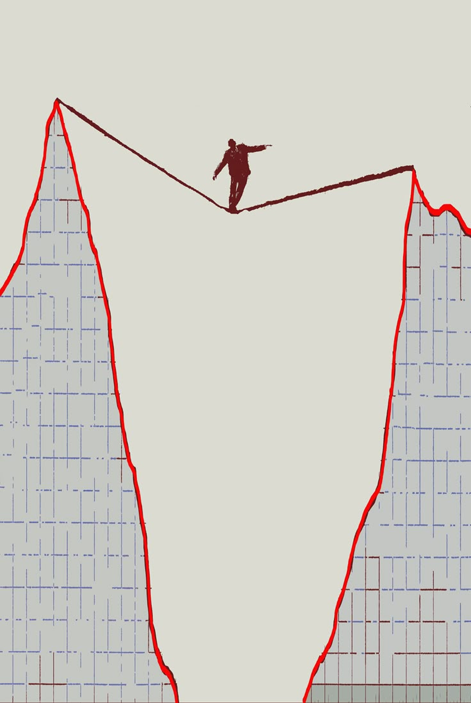

SEGUNDA, 26/10 · DIA SEGUINTE À ELEIÇÃO
O dia em que
o mercado
perdeu o chão.
BOLSA
−13,9%
DÓLAR
R$ 5,40
JUROS LONGOS
+2,5 PT
fechamento de 26/10 · maior queda da Bolsa em 6 anos · Metrópoles, Exame, CNN Brasil
E você:
compra
ou espera?